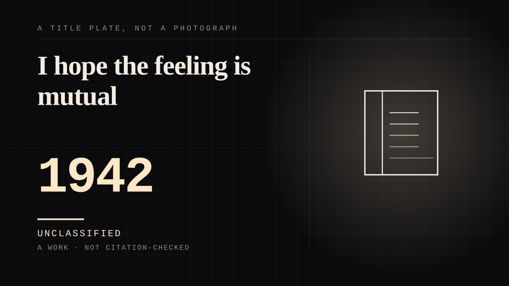

A work · 1942–1947 · The long war
I hope the feeling is mutual
Two years of letters to a listener who could not answer, written by a thirteen-year-old who said out loud that she hoped the feeling was mutual.

The purest instance of an undemanded tie on this site, and the only place in the corpus where somebody living inside a parasocial relationship states its definition. Anne Frank wrote to Kitty - "Dear Kitty... I like writing to you most, you know that don't you, and I hope the feeling is mutual" - and there was no circumstance in which it could be returned. The hoping is the whole of it, and she named it herself before anybody had a word for it.
It was a network, not a friend.
She addressed letters to eight imaginary correspondents - Kitty, Pop, Phien, Conny, Lou, Marjan, Jettje and Emmy - and by November 1942 she was writing only to Kitty, but what she had built was a social circle with no reciprocating nodes in it. Every tie inside it was one-sided and the correspondents were addressed as though they might yet answer. That is a structure the corpus had not described, because a single imaginary friend is the version everybody writes about.
The listeners were invented twice over.
Kitty, Pop, Phien, Conny and Lou are drawn from the Joop ter Heul books of Cissy van Marxveldt, a real Dutch children's series Anne admired; Marjan, Jettje and Emmy she made up herself. The far end is fabricated at two removes - first the character, then the correspondence - which is imagined at its strongest and not the same object as a companion who happens to be silent.
She addressed the object as well as the person.
"As long as this still exists, I cannot be sad" - she is speaking to the notebook about the notebook, so the tie survives the removal of everything it was attached to. That is archive operating inside a bond, and there is no other instance of it here.
And then it became collective, which is the other half of the entry.
The diary was published in 1947, after every member of the family but Otto Frank was dead, and has since sold something like thirty million copies in more than sixty-five languages. The most private one-sided conversation in the western canon became a mass reading relationship with a dead child. Every reader is a tooth in one machine, none of them built it, and the thing they all turn against is a notebook a teenager addressed to someone who could not write back.
And the machine got it wrong, and the error is the argument.
The most quoted line in the world's most-read diary is a truncation. It does sit in the final notebook Anne wrote, but the United States Holocaust Memorial Museum records that it "has been taken out of context" and that read in full - about three paragraphs - "it is part of a quote about a great deal of despair and longing." What follows the famous line is: "I simply can't build up my hopes on a foundation consisting of confusion, misery, and death." The optimism is the misquotation. The most famous private sentence in the literature has been replaced by its opposite by people who were not there and never wrote back - which is what happens when a one-sided text goes public, and it is the whole argument of this site arriving from the one place it could not have been constructed.
Otto Frank said he had two Annes, one that belonged to him and one that belonged to the world, and received thousands of letters once it was published. The far end of the tie eventually acquired a reply - addressed to a dead child, in enormous volume, by strangers.
Where it sits
1900 1900-1949 · 1942 1949
Provenance · 4 source record(s)
- retrievableThe primary institutional account and the source of the structural claims. That Kitty is the fictional character Anne addressed many letters to, first appearing 22 September 1942. That Anne wrote she wanted 'to correspond with someone' and invented EIGHT characters to do so - Kitty, Pop, Phien, Conny, Lou, Marjan, Jettje and Emmy - who in her imagination formed a circle of friends. That five came from the books of Cissy van Marxveldt and three were her own invention. That the letter form beat the conventional diary in strength by November 1942. And the line the entry is titled on: 'I like writing to you most, you know that don't you, and I hope the feeling is mutual'.Anne Frank House, "So, who is 'Dear Kitty'?" ↗
- retrievableThe misquotation, from the institution that holds the notebooks. 'That quote, you see everywhere... you see it on posters and t-shirts, and it gives the perception that in spite of it all, this woman had a very rosy view of the world.' It is in the final notebook Anne wrote, and: 'that quote has been taken out of context, and when it is read in the full context - about three paragraphs worth - one realizes that it is part of a quote about a great deal of despair and longing.' Also the episode in which Otto Frank is quoted saying he had two Annes, one that belonged to him and one that belonged to the world, and that after publication he received thousands and thousands of letters.United States Holocaust Memorial Museum, Anne Frank the Writer: Interviews - Sara J. Bloomfield on the 'good at heart' quote ↗
- retrievableThe shape of the change and the death of the biographical reading. That she begins in conventional notes and after two months switches to letters to imaginary friends, and that by 13 November 1942 she writes to Kitty alone through to her last entry in August 1944. And that the Kitty-Egyedi speculation began in the 1970s and was never supported: Kitty Egyedi herself said that once Kitty 'started to lead her own life in the diary that it ceases to matter who is meant by Kitty. The name is not meant to be me.'Wikipedia, The Diary of a Young Girl ↗
- retrievableThe ordinary dates and the scale of the outcome. Her first full entry to Kitty on 14 June 1942, two days after turning thirteen; two years of entries; Otto Frank publishing it in 1947 as Het Achterhuis; and the book in more than sixty-five languages.Encyclopaedia Britannica, 'Today in History: June 14 - The Day Anne Frank Started Her Diary' ↗
Not yet stood behind. The entry is real. A person has not read the citation and confirmed it, so treat the date as approximate until they do.
Connected · 2 out, 0 in
It sits in
The full timeline → · The database → · See it in the atlas →